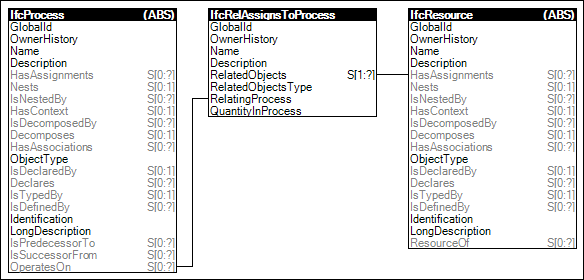

Link to this page
Link to this pageProcesses may have assignments indicating resources consumed or occupied by the process. An example of such assignment is a carpenter labor resource building a wall.
Figure 73 illustrates an instance diagram.
 |
Figure 73 — Process Assignment |